Imprese
45%delle imprese che pubblicano il report di sostenibilità non ha obiettivi misurabili di riduzione delle emissioni (campione di 800 imprese)
Industria Felix e Cerved, ANSA, 20.11.2026 ↗Visione + Misurazione + Dato + Valore = ESG
Aiuto imprese e investitori a trasformare la sostenibilità in valore concreto, partendo dal dato: credito più accessibile, rapporti più solidi con clienti e filiere. Il mio obiettivo è costruire ponti, tra imprese e con le istituzioni, convinto che il valore cresca solo quando si fa sistema.
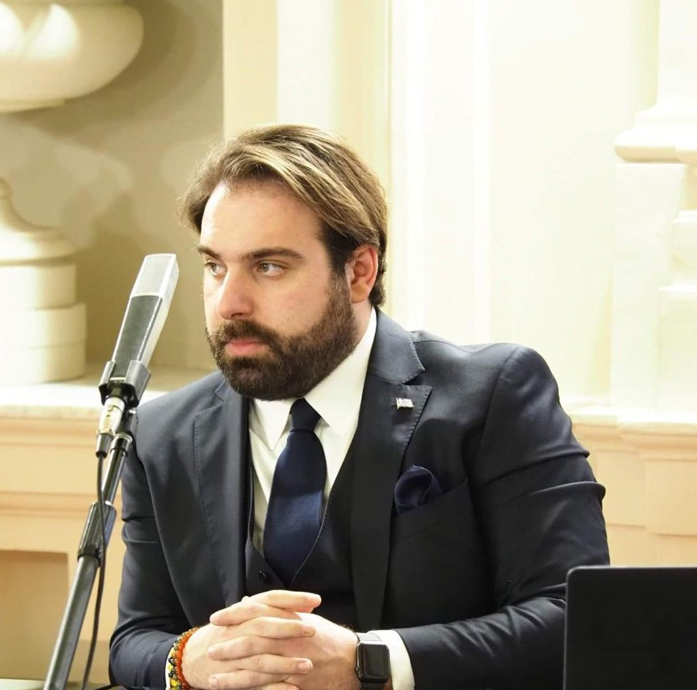
Termometro ESG
I numeri che seguo per capire lo stato di salute dell'ESG: credito, rischio, imprese, fondi. Perché il valore parte dal dato.
Aggiornata al
Archivio delle edizioni precedenti →Imprese
45%delle imprese che pubblicano il report di sostenibilità non ha obiettivi misurabili di riduzione delle emissioni (campione di 800 imprese)
Industria Felix e Cerved, ANSA, 20.11.2026 ↗Credito
63%delle banche italiane offre alle imprese supporto tecnico per pianificare e valutare gli investimenti ESG
▲ Oltre il 90% offre green loan
Teleborsa, 29.10.2026 ↗Rischio
36,6%delle PMI italiane è ad alto rischio climatico fisico
Italia paese UE più colpito
ESG News, 23.10.2026 ↗Imprese
36,2%delle imprese italiane ha investito in prodotti e tecnologie green nel 2020-2025: sono 591.450
▲ Più export: 22% contro 17%
GreenItaly 2026 (Symbola, Unioncamere), 17.11.2026 ↗Fondi
€6 mldalle imprese per decarbonizzazione e rinnovabili: 3,53 alle PMI non energivore, 2,5 alle energivore
▲ Approvati dal CdM
Mase via Teleborsa, 28.10.2026 ↗Valore
+13%di fatturato stimato per le società benefit rispetto a imprese simili
▲ Lo scopo paga
ESG News, 27.10.2026 ↗Chi sono
La sostenibilità non è un costo né un obbligo di conformità: è creazione di valore, fatta di processi più efficienti, accesso al credito e crescita dei ricavi. Il mio lavoro è dimostrarlo con il dato.
Il mio è un percorso eterogeneo, tra istituzioni, diritto e impresa. Saper leggere e interpretare le norme nazionali e internazionali, conoscere dall'interno i meccanismi con cui si applicano e il funzionamento della macchina burocratica, e sapermi relazionare con figure apicali del mondo pubblico e privato: è questo che mi ha permesso di capire come trasformare la sostenibilità in una leva di creazione di valore per le imprese, e di fare da ponte tra imprese e istituzioni.
Le radici
Tutto comincia dall'impegno civico. Sono cresciuto nell'associazionismo, prima nel Rotaract e poi nel Rotary, dove ho imparato che un'organizzazione vale per quello che restituisce alla sua comunità. Nel febbraio 2011, alla Sala dei Notari di Perugia, ho moderato un convegno sull'impresa etica con Brunello Cucinelli, fondatore della Brunello Cucinelli S.p.A. e interprete del "capitalismo umanistico", Aurelio Forcignanò, già direttore generale di Confindustria Umbria, e Giuseppe Colaiacovo, allora vicepresidente di Colacem (Gruppo Financo). Lì ho visto per la prima volta l'etica d'impresa tradotta in scelte concrete. Sono i temi che avrebbero segnato il mio percorso umano e professionale.
La formazione
Per capire quelle scelte servivano due lingue: quella del diritto e quella dei numeri. Ho studiato Giurisprudenza all'Università di Perugia, con un anno di Erasmus all'Università Aristotele di Salonicco, e poi Management, indirizzo Corporate Finance, alla LUISS Guido Carli. L'MBA all'Imperial College Business School di Londra ha chiuso il cerchio: gli investimenti in clean technology e la sostenibilità come vantaggio competitivo sono diventati il centro del mio lavoro.
Istituzioni e diritto
Intanto il diritto è diventato servizio e mestiere. Dal 2013 ho rappresentato la Grecia come Console a Perugia, mentre parallelamente coltivavo l'attività forense. Il consolato è stato un osservatorio privilegiato su come nascono le regole e su come si costruisce la fiducia tra amministrazioni, stakeholder politici apicali, imprese e comunità. Come Console ho anche affiancato le aziende nel dialogo con le istituzioni: un lavoro di raccordo tra pubblico e privato che non si è mai interrotto e che oggi prosegue in un'altra veste. Al consolato ho imparato a relazionarmi con capi di governo, ministri e vertici delle istituzioni, e porto la stessa familiarità con i tavoli decisionali nel confronto con consigli di amministrazione e top management.
La governance dall'interno
Nel 2018 ho avuto per la prima volta la possibilità di sedere dall'altra parte del tavolo. Nel consiglio di amministrazione del Porto di Salonicco ho capito che la sostenibilità si decide lì: rischi, investimenti, rapporti con investitori e territorio. Questa nuova prospettiva mi ha insegnato a guardare alla sostenibilità con gli occhi di chi deve decidere: un consiglio non chiede principi, chiede dati su cui scegliere e la prova del valore che si crea per l'impresa, per gli azionisti e per il territorio in cui opera.
Dove nasce la consulenza ESG
Qui la sostenibilità è diventata il mio mestiere. Ho accompagnato le imprese nei bilanci di sostenibilità, nei report integrati e nelle DNF secondo GRI, <IR> Framework e SASB.
La scala
In KPMG ho portato quel metodo su scala: ho guidato incarichi di rendicontazione e assurance di sostenibilità per gruppi italiani e internazionali, coordinando un team di circa 30 persone, e sono stato vice coordinatore dei GHG Champions, il team nazionale interno di specialisti sui KPI legati alle emissioni di gas a effetto serra e agli impatti sul cambiamento climatico.
Oggi
Oggi, come Advisory & Strategic Growth Director di Tecno Group, metto questo percorso al servizio di imprese e investitori. Tecno unisce competenze tecniche e piattaforme tecnologiche che permettono di non fermarsi alla rendicontazione: il dato si misura alla fonte, si ricostruisce lungo i processi e da numero da comunicare diventa strumento di gestione. Le soluzioni vanno dalla misurazione dell'impatto alla gestione della filiera, dalla rendicontazione alla definizione delle strategie e dei piani di decarbonizzazione. Il mio ruolo è far arrivare quel dato al top management, alle banche e agli investitori come leva di valore, e lavorare perché imprese, filiere e istituzioni facciano sistema.
In parallelo
Incarichi in organismi professionali e associativi, nati prima e proseguiti accanto al mio lavoro in azienda, ma indipendenti da Tecno Group.
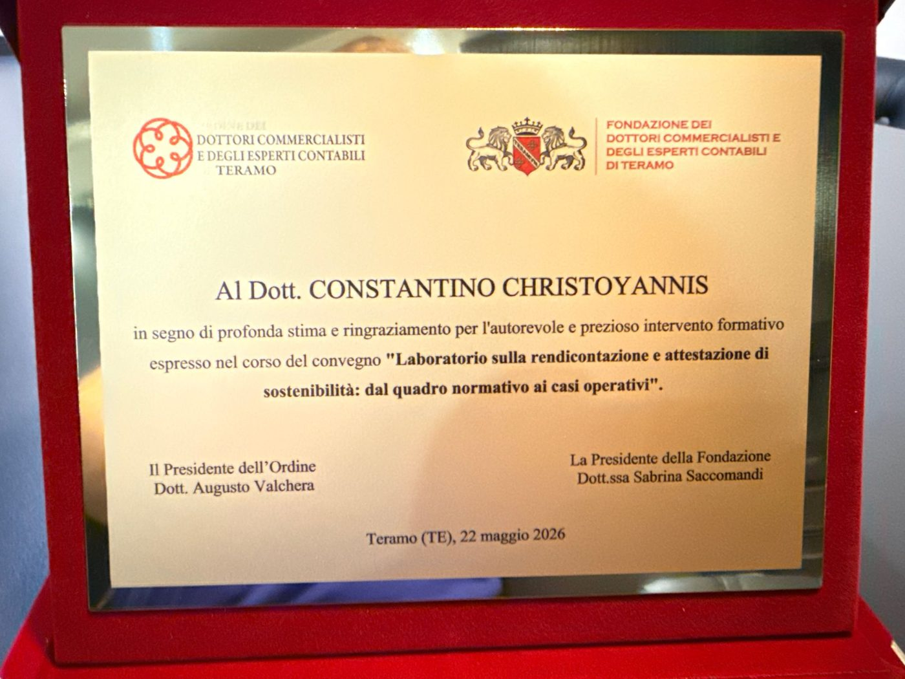
«In segno di profonda stima e ringraziamento per l'autorevole e prezioso intervento formativo»
Ordine e Fondazione dei Dottori Commercialisti di Teramo, «Laboratorio sulla rendicontazione e attestazione di sostenibilità», 22 maggio 2026
In aula
Insegnare mi obbliga a rendere semplice ciò che è complesso, ed è il modo migliore per portare il dato fuori dagli uffici e farlo diventare mentalità e cultura aziendale. È anche un modo di fare sistema tra università, professioni e imprese.
Advisory
Per grandi gruppi quotati, PMI, mid-cap e investitori. Si parte dal dato e si arriva al valore: quello che chiedono banche, clienti e norme diventa leva di crescita.
Oggi svolgo questa attività in Tecno Group, come Advisory & Strategic Growth Director. Un gruppo che unisce consulenza e tecnologia: piattaforme e soluzioni tecniche che misurano il dato alla fonte e lo rendono utilizzabile non solo per la rendicontazione, ma soprattutto per la gestione. Per la singola azienda tanto quanto per la filiera.
Un piano ESG legato al business, da presentare a banche, investitori e grandi clienti.
Report di sostenibilità solidi, obbligatori o volontari, idonei per un processo di assurance e utili a gestire l'azienda.
Trasformare i requisiti ESG dei grandi clienti in un vantaggio competitivo, e chiederli bene ai propri fornitori.
Dal costo all'investimento: metriche che un CFO può portare in consiglio.
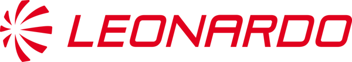
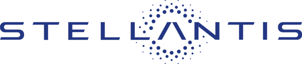
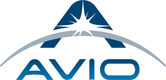
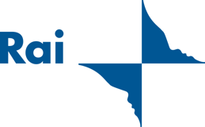
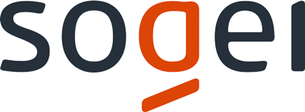
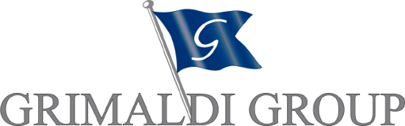
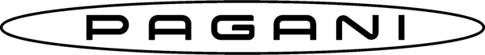
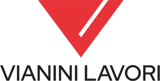
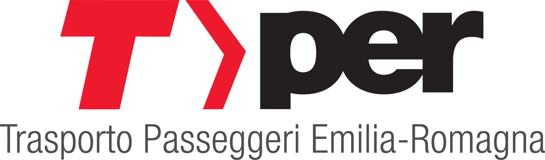
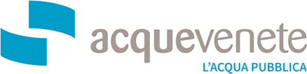
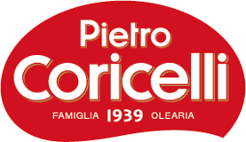
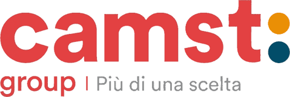
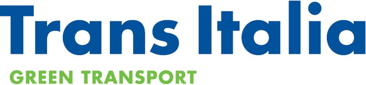
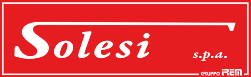
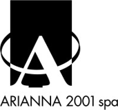
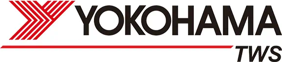
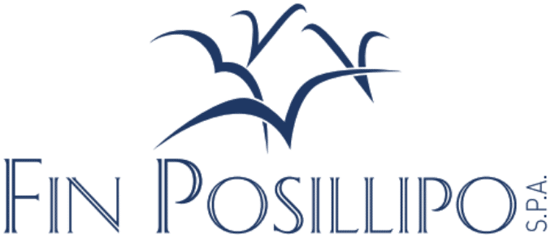
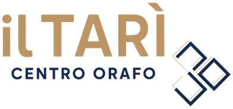
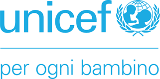
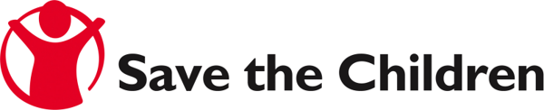
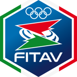
Pillole ESG
Due volte a settimana su LinkedIn. Qui le ultime tre.
Tutte le pillole →Amazon finanzia sensori anti-perdite e zone umide in Germania per restituire l'acqua che usa: chi misura la propria dipendenza dalla natura sceglie dove intervenire, e le banche iniziano a chiederlo.
Leggi la pillola →Le banche valutano i rischi ESG su dieci anni, ma solo il 4% delle imprese misura lo Scope 3 con dati primari dei fornitori.
Leggi la pillola →Il D.L. 193/2026 anticipa le soglie dell'Omnibus per il 2026-27, mentre la Commissione mette in consultazione lo standard UE unico di limited assurance.
Leggi la pillola →Ogni settimana
Le notizie ESG dal mercato italiano e internazionale, corrette con il mio punto di vista e messe sul tavolo per discutere insieme di come riguardano persone e aziende.
Ogni mercoledì su LinkedIn, il giorno dopo anche qui.
La COP31 si chiude senza accordo, ma regole europee, banche ed energia continuano a pesare sulle imprese. Su 75 imprese italiane, nessuna tratta la geopolitica come tema rilevante a sé.
Leggi l'articolo →Pubblicazioni, speech e formazione
Rassegna stampa
Confindustria L'Aquila Abruzzo Interno ·
«Al convegno […] sono intervenuti […] la Presidente Abi Abruzzo, Valeria Nina Franceschini […] e Constantino Christoyannis, Senior manager KPMG. […] Le conclusioni dei lavori sono state affidate al Vice Presidente nazionale, Angelo Camilli.»Leggi →
Anche su L'Aquila Blog · AbruzzoWeb
AIAS · Auditorium GSE ·
«Modera: Constantino Christoyannis, Senior Manager, ESG Audit & Accounting KPMG Italy»Leggi →
Cuoreeconomico ·
«Sono inoltre intervenuti […] Maurizio Cicioni e Constantino Christoyannis, di KPMG.» Ripreso anche da Corriere dell'Umbria, Umbria24, UmbriaOn e RGU.
Il Messaggero ·
«L'evento è stato coordinato da Constantino Christoyannis, console di Grecia a Perugia.»Leggi →
Fondazione Sinderesi ·
«S.E. dott. Constantino Christoyannis, Console di Grecia a Perugia, per la moderazione dell'evento.»Leggi →
PerugiaToday ·
«Coordinato da Constantino Christoyannis, Console di Grecia a Perugia.»Leggi →
Provincia di Perugia ·
«L'evento formativo, coordinato da Constantino Christoyannis, Console di Grecia a Perugia…»Leggi →
Fondazione Sinderesi ·
Il volume della Scuola Sinderesi presentato con il presidente del Parlamento europeo David Sassoli.Leggi →
LUISS · Fondazione Sinderesi ·
Tra i relatori «Constantino N. Christoyannis, Console di Grecia in Perugia», con Religion Today Film Festival e Konrad-Adenauer-Stiftung.Leggi →
Il Messaggero ·
Nel consiglio del Rotary Club Perugia Trasimeno, «tutti alla guida di commissioni».
Umbria Domani ·
«In un periodo non facile riscoprire il patrimonio e l'identità greca è un valore.»Leggi →
Gazzetta Ufficiale ·
«In data 19 novembre 2013 il Ministero degli affari esteri ha concesso l'exequatur.»Leggi →
Contatti
Scrivimi da qui: il messaggio mi arriva direttamente.
Progetti, ricerca, tavoli di lavoro, articoli. Scrivimi di cosa si tratta.
Convegni, seminari con crediti formativi, workshop. Indicami data, platea e tema.